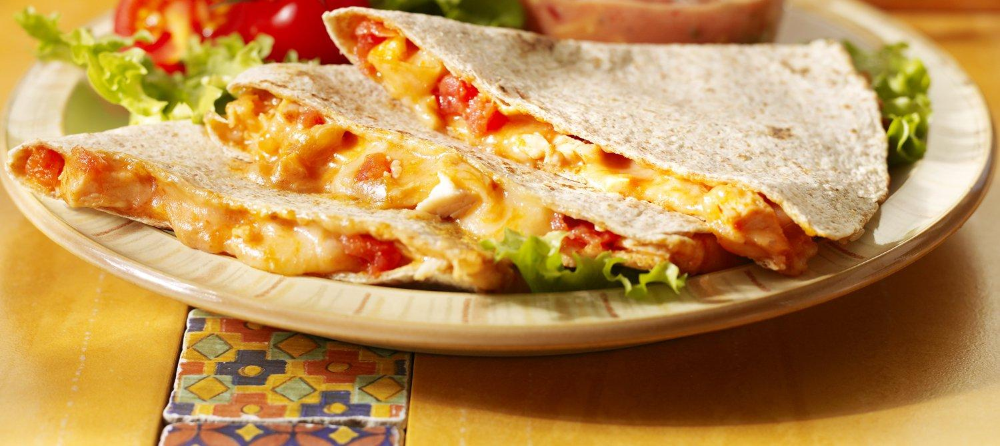
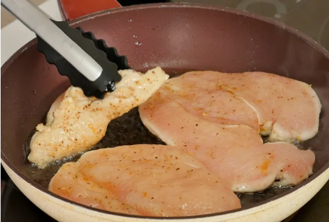
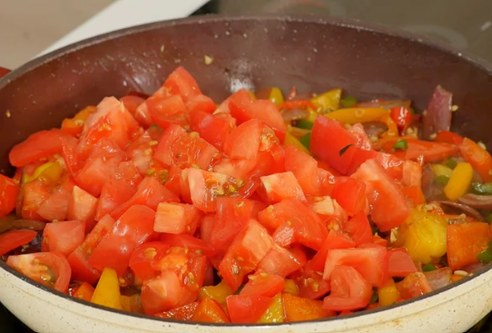
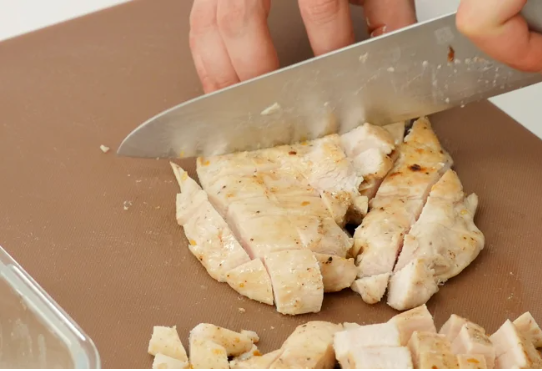
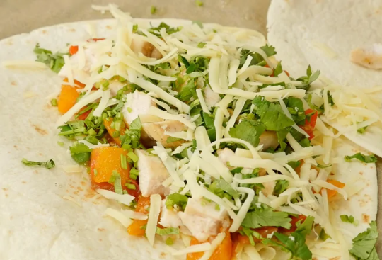
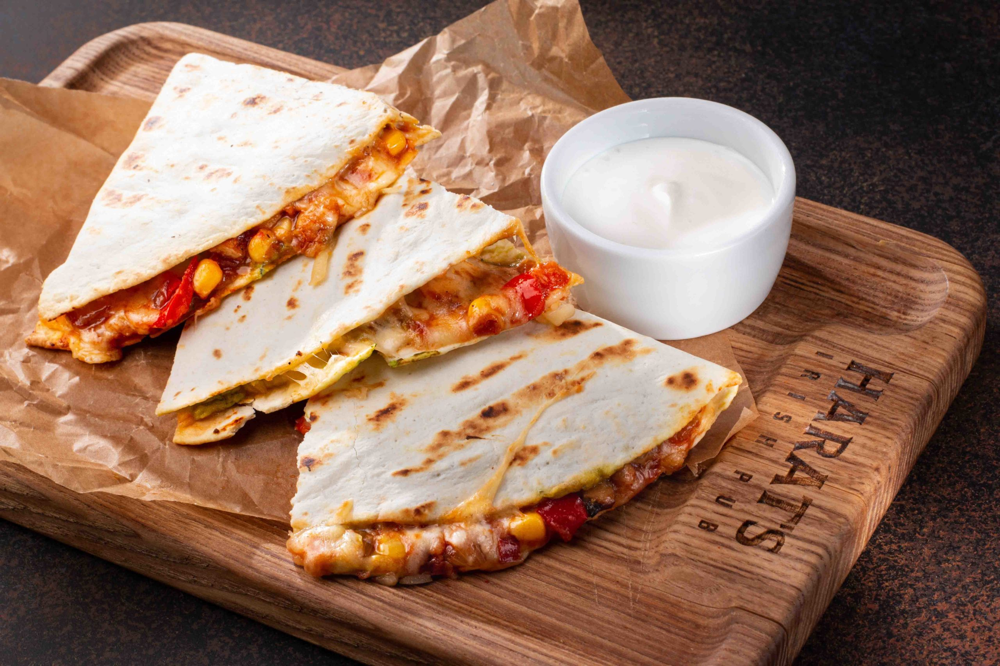

Кесадилья с курицей и сыром
Кесадилья — мексиканский фастфуд, который готовят со всевозможными начинками. В круглую
кукурузную или пшеничную лепешку тортилью заворачивают мясо, овощи, грибы, фарш, кукурузу,
фасоль и тертый сыр, а затем обжаривают, пока не станет хрустящей.
Начинки для кесадильи могут быть разными, но самый популярный рецепт — кесадилья с курицей.
Куриное филе можно использовать сырое, обжарив его до сочности на сковороде, а можно взять
уже готовое — от копченой или жареной курицы. Овощной соус чаще всего готовят с добавлением
сладкого и острого перца, свежих помидоров или консервированных, томатного соуса. Можно
добавить консервированной фасоли для большей сытности. Все обжаривается на сковороде и
получается начинка для тонких лепешек тортилья. А чтобы кесадилья держала форму, добавляется
сыр — его можно не жалеть, чем больше, тем вкуснее!

Ингредиенты
Для приготовления кесадильи с курицей и сыром вам понадобятся следующие ингредиенты:
| Ингредиенты |
Количество |
| Куриное филе |
¾ штуки |
| Красный сладкий перец |
100 г |
| Красный лук |
100 г |
| Чеснок |
1¾ зубчика |
| Помидоры |
133 г |
| Тортильи |
2 штуки |
| Молотый перец |
по вкусу |
| Соль |
по вкусу |
| Сыр |
133 г |
| Растительное масло |
по вкусу |
Инструкция приготовления
-
Куриную грудку надрезать вдоль и развернуть как книгу. Посолить поперчить, посыпать острым
перцем, сбрызнуть растительным маслом, накрыть пленкой и дать помариноваться 10-15 минут.
Обжарить на раскаленной сковороде по 2 минуты с каждой стороны. Затем переложить и дать остыть.

-
Нарезать красный лук крупными дольками. Сладкий перец, чили и помидоры нарезать кусками такого
же размера. Чеснок нарезать мелко. На ту же сковороду добавить масло, и на сильном огне
обжарить сначала сладкий перец, затем добавить к нему лук, чили и чеснок. Ближе к концу добавить
помидоры. Овощи должны получиться с румяными зажаренными боками, но при этом оставаться хрустящими.

-
Курицу нарезать крупными кусками, кинзу тоже не очень мелко. Добавить их к обжаренным овощам,
посолить, поперчить, можно добавить сахар и полить соком лайма. На сухой сковороде подогреть
тортилью с обеих сторон.

-
Положить тертый сыр и начинку, сложить пополам и отправить в духовку, разогретую до 200 градусов
на режиме гриля. Подпекать тортилью нужно 4-5 минут, тортильи должны стать золотистыми и хрустящими.

-
Подавать блюдо можно с любым соусом, наприме, со сметаной, но так же можно и с гуакамоле и сальсой.
